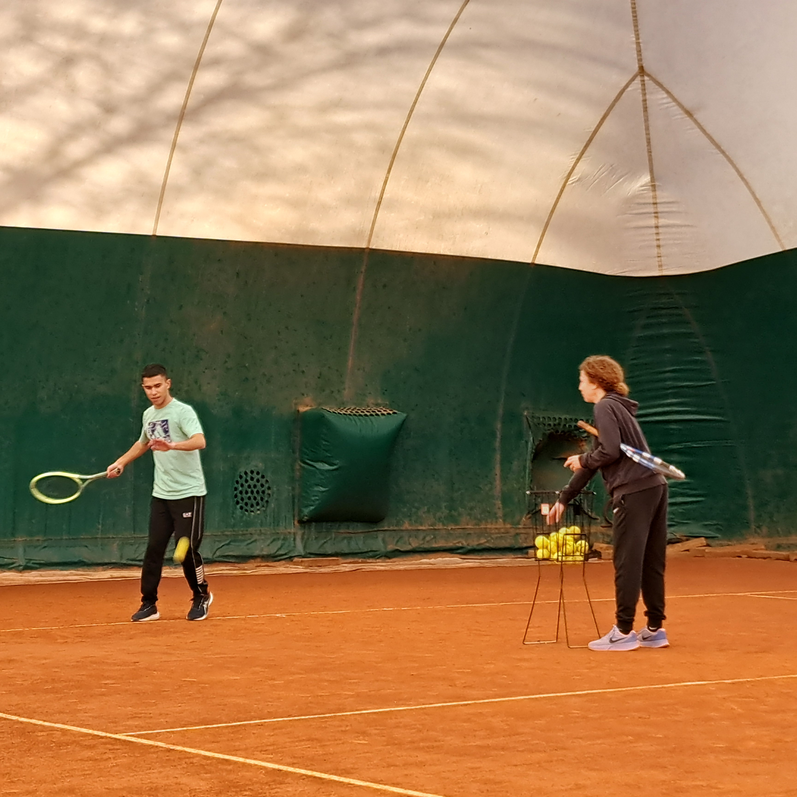
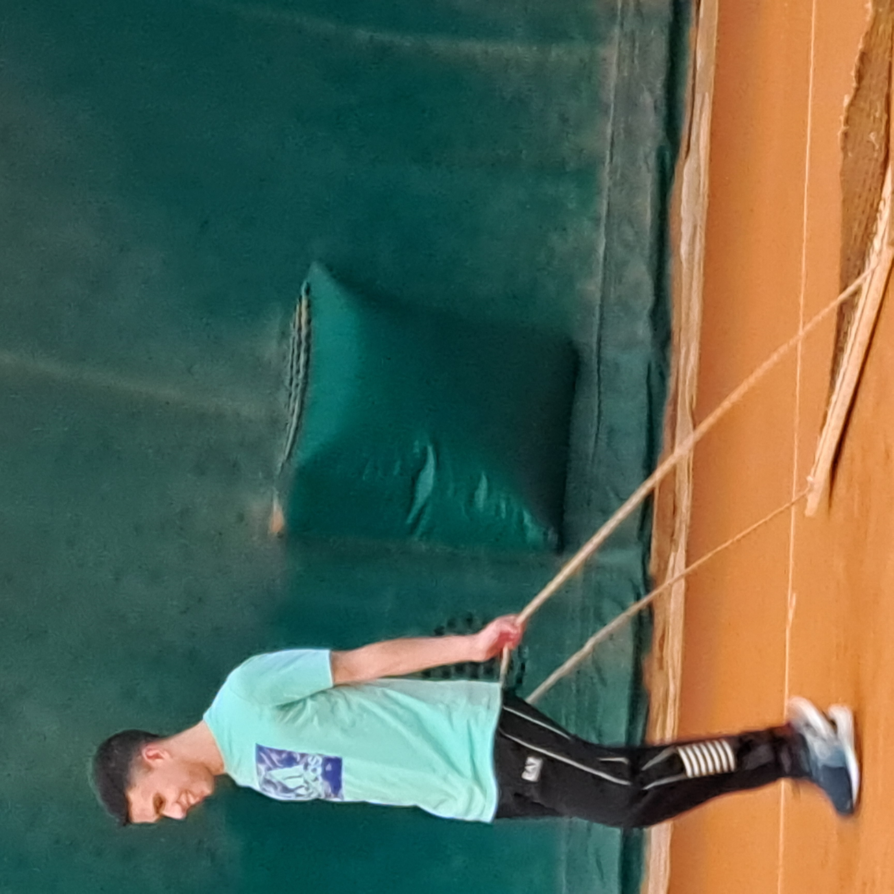
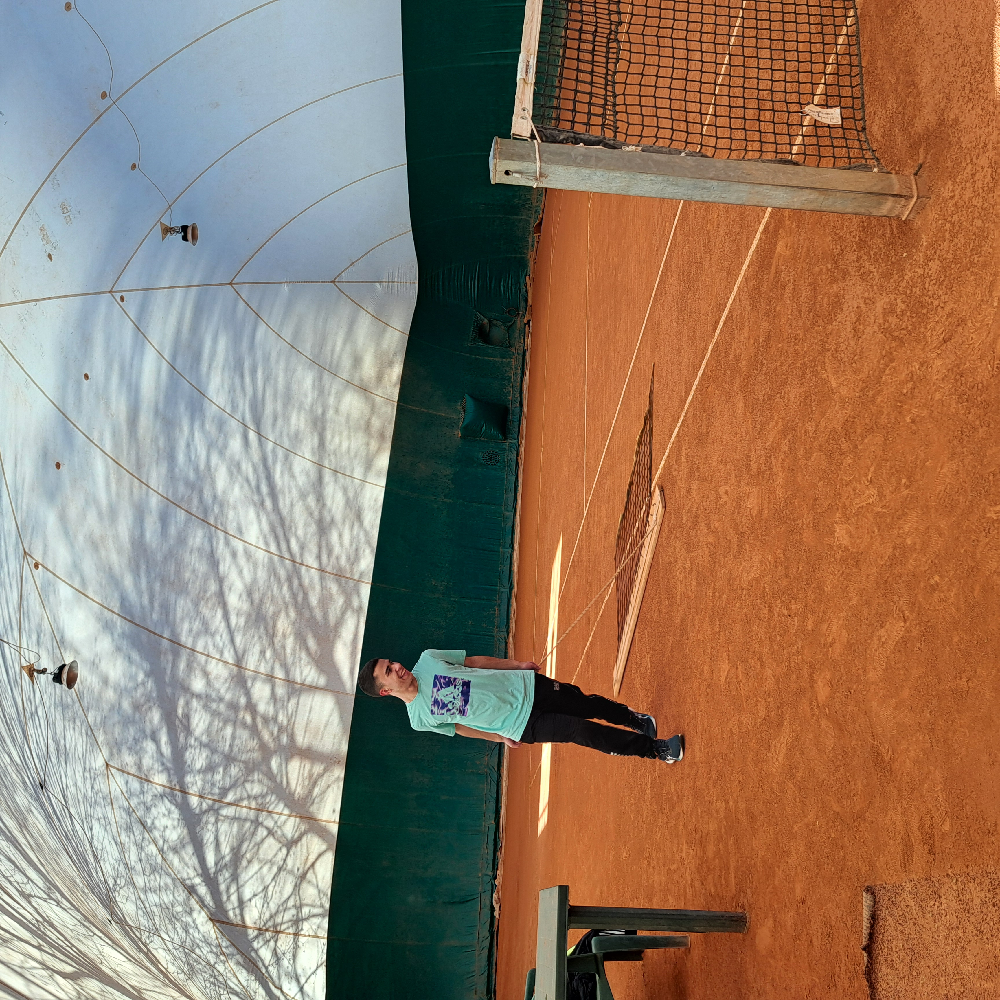

"Un vero tennista non teme la fatica: la trasforma in energia..."
"Nel tennis come nella vita, vince chi sa rialzarsi dopo ogni punto perso..."
Il tennis è uno sport elegante e appassionante, capace di unire forza, precisione e grande emozione in ogni scambio. Sul campo, ogni punto è una storia fatta di strategia, resistenza e talento personale.
La mia esperienza
Pratico il tennis da due anni con entusiasmo e costanza.
Ho sviluppato capacità tecniche, concentrazione e spirito sportivo. Il tennis è uno sport individuale e mi ha insegnato anche l'autocontrollo e ad avere più autostima e mi ha fatto migliorare in maniera costante.
Questo sport mi ha insegnato l'importanza dell'impegno, della disciplina e del rispetto verso gli avversari.
Partecipando ad allenamenti e partite, ho migliorato la mia coordinazione, la resistenza fisica e la capacità di gestire le emozioni nei momenti di sfida.
Il tennis è diventato per me non solo un'attività sportiva, ma anche un'occasione di crescita personale e di socializzazione, perchè ho conosciuto dei nuovi amici.
Stimo molto Jannik Sinner perchè è un tennista che cerca sempre di migliorare, è un modello di sportività, correttezza e anche di umiltà. Un altro tennista dal grande carisma e che non si arrende mai è Carlos Alcaraz. Anche lui è molto umile e rispettoso verso gli avversari.



